|
Calcolare l'area della regione di piano compresa fra la parabola 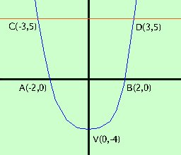 y = x2 - 4 e la retta y = 5 Come prima cosa facciamo la rappresentazione grafica Calcoli L'area che devo trovare e' quella indicata con il verde piu' scuro 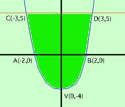 Tale area e' in parte sopra ed in parte sotto l'asse delle x, quindi studiamole nei particolari: 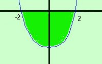 Per fare l'area sotto l'asse x bastera' fare l'integrale della parabola da -2 a 2 e cambiarlo di segno Per fare l'area sopra l'asse delle x prima faremo l'integrale da -3 a 3 della retta e poi toglieremo l'area compresa fra la parabola e l'asse x da -3 a -2 e anche da 2 a 3 Quindi per calcolare l'area devo fare A = - 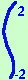 (x2 - 4)dx + 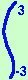 5 dx - 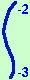 (x2 - 4)dx - 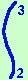 (x2 - 4)dx = essendo tutti gli integrali con estremi diversi non posso sommare niente e faccio tutte le integrazioni = -  x3 /3 - 4x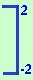 +
5x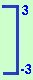 -
x3 /3 - 4x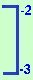 -
x3 /3 - 4x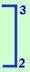 = x3 /3 - 4x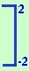 +
5x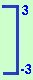 -
x3 /3 - 4x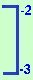 -
x3 /3 - 4x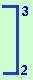 =
= - 8/3 - 8 + 8/3 -8 +
15+15 -
-8/3 +8 +9-12 -
9-12 - 8/3 +8 = +
15+15 -
-8/3 +8 +9-12 -
9-12 - 8/3 +8 ==16 - 16/3 + 30 + 8/3 - 5 + 8/3 - 5 = 36 Quindi l'area cercata vale 36 unita' quadrate del piano Nota: sviluppare bene i calcoli perche' e' facilissimo sbagliare un segno |